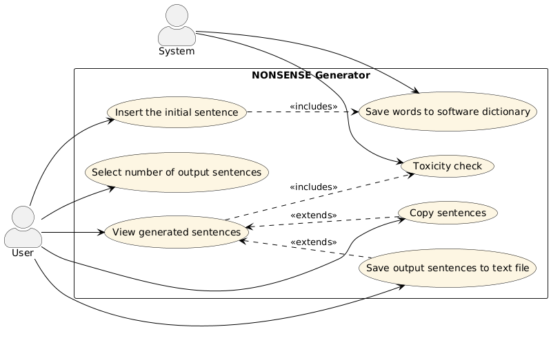

Manuale
Cos'è "NONSENSE Generator"?
NONSENSE Generator è un software che genera frasi grammaticalmente corrette ma semanticamente prive di senso.
Il sistema resta in attesa di una frase inserita dall’utente, analizza la struttura sintattica e ne estrae i componenti principali (nomi, verbi, aggettivi), archiviandoli in un dizionario interno.
A partire da questo dizionario e da un lessico di base fornito dal sistema, il generatore costruisce frasi originali e imprevedibili combinando elementi linguistici secondo schemi grammaticali predefiniti.
Ogni frase viene poi sottoposta a un controllo di tossicità, tramite le API Google Cloud Natural Language, per garantire contenuti sicuri e appropriati.
Il progetto include anche funzionalità aggiuntive:
- salvataggio dei risultati su file (.txt)
- copia rapida negli appunti
- interfaccia interattiva per l’inserimento e l’elaborazione delle frasi
L'immagine sottostante mostra un' anteprima del NONSENSE Generator.
Nella prima riga è richiesto l'inserimento di una frase, scritta in inglese.
Nella seconda riga è possibile selezionare il numero di frasi nonsense che sono richieste in output.
Successivamente, per vedere i risultati, è necessario premere il bottone Genera e verranno mostrate nella parte sottostante le varie frasi generate.
Nel caso in cui vi sia una parola non ammessa, la frase viene oscurata e compare Sentence not shown due to its toxicity.
Inoltre ai lati sono presenti due pulsanti: Salva per il salvataggio e Copia per la copia rapida delle frasi generate.
Tecnologie usate
| Nome | Versione | Descrizione |
|---|---|---|
| Java | 17 | Ambiente e linguaggio di programmazione utilizzati per sviluppare il software. |
| JUnit | 5 | Framework per il testing automatico delle classi Java. |
| Spring Boot | 3.2.4 | Framework per lo sviluppo di applicazioni modulari e RESTful. |
E' raccomandato consultare la sezione Javadoc per comprendere meglio l'integrazione delle librerie.
Descrizione ed implementazione del progetto
All'inizio dello sviluppo del progetto le specifiche sono state discusse e studiate per affrontare con rigore le fasi di progettazione e sviluppo.
Dopo aver completato la fase di delineamento delle specifiche e del design, è iniziato lo sviluppo del NONSENSE Generator.
Interfaccia Grafica
L’interfaccia grafica del progetto è strutturata principalmente tramite il file index.html, che definisce la struttura base e i componenti visuali della pagina web.
Struttura HTML(index.html):
La pagina si compone di una struttura semplice e funzionale, organizzata con elementi HTML standard. Tra gli elementi principali si trovano:
- Un contenitore principale che racchiude tutta l’interfaccia, per facilitare la gestione del layout e il posizionamento degli elementi.
- Pulsanti interattivi che permettono all’utente di generare testo ed eseguire altre funzioni.
- Un’area di visualizzazione, dove viene mostrato il testo generato dall’applicazione.
Stile grafico(style.css):
L’aspetto visivo è gestito dal file CSS, che definisce le regole di stile per i vari elementi HTML. Le caratteristiche principali includono:
- Uso di layout responsive e spaziature per garantire una disposizione chiara e leggibile degli elementi su diverse dimensioni di schermo.
- Personalizzazione di colori, font, bordi e background per creare un’interfaccia esteticamente gradevole e coerente con il tema del progetto.
- Definizione di stili per i pulsanti e le aree di testo per migliorarne la visibilità e l’interattività.
Comportamento dinamico(script.js):
La logica di interazione con l’utente è gestita dal file JavaScript, che implementa:
- La gestione degli eventi sui pulsanti, in particolare la generazione dinamica di testo o altre azioni specifiche al click dell’utente.
- L’aggiornamento dell’area di output in tempo reale, consentendo di visualizzare immediatamente i risultati delle azioni eseguite.
- Possibili controlli sulla validità o formattazione del testo generato, per assicurare coerenza e correttezza del contenuto visualizzato.
Genera
| Generazione delle frasi richieste | Utilizzando il pulsante "Genera" è possibile generare il numero richiesto di frasi NONSENSE. |
Copia
| Copia le frasi generate | Utilizzando il pulsante "Copia" è possibile copiare le frasi generate, sia singolarmente che tutte insieme. |
Salva
| Salvataggio delle frasi generate | Utilizzando il pulsante "Salva" è possibile salvare le frasi generate in un file di testo. |
Download del Software
Per utilizzare NONSENSE Generator si raccomanda di:
- Clonare il progetto da GitHub in una cartella a piacere:
git clone https://github.com/TognonGiac/nonsensegenerator.git - Configurare la propria API key Google:
- aprire il file:
nonsensegenerator/src/main/resources/application.properties - si vedrá la riga:
google.api.key=yourkey"inizia con AIza" - inserire invece di yourkey "inizia con AIza" la propria key
- Avviare il progetto da terminale usando Maven Wrapper:
- Su Linux/macOS:
./mvnw spring-boot:run - Su Windows (PowerShell o cmd):
mvnw.cmd spring-boot:run - Aprire il browser e andare all’indirizzo:
http://localhost:8080--> qui si vedrà il sito in funzione.
ALTERNATIVA USANDO IDE (IntelliJ, Eclipse, VS Code)
Invece di fare le operazioni descritte al punto 3, è necessario:- Aprire il progetto nell'IDE
- Navigare nella classe:
com.nonsense.NonsenseApplication - Eseguire direttamente questa classe (run/debug)
- Il sito sarà attivo all'indirizzo:
http://localhost:8080, come nel punto 4 sopra.
Design Patterns
GRASP
Creator
La classe NonsenseService è responsabile della creazione delle frasi e coordina l'interazione tra le componenti coinvolte (analizzatore, generatore, filtro). Secondo il principio Creator, questa classe ha la responsabilità di creare oggetti basandosi sui dati ricevuti dall'utente.
Controller
La classe NonsenseController funge da Controller, gestendo la comunicazione tra l'interfaccia esterna e la logica applicativa. Riceve input, invoca i metodi del servizio, e restituisce il risultato all'utente.
Low Coupling
Il progetto è stato strutturato per minimizzare l'accoppiamento tra le classi. Ogni componente opera su un livello di astrazione ben definito, questo approccio riduce l’impatto delle modifiche e semplifica il testing.
High Cohesion
Ogni classe è progettata con una singola responsabilità ben definita: SentenceAnalyzer si occupa dell'analisi grammaticale, ToxicityChecker della moderazione del contenuto, e NonsenseService coordina ma non implementa la logica di base.
Pure Fabrication
La classe ToxicityChecker è un esempio di Pure Fabrication: è stata progettata per incapsulare tutta la logica di interfacciamento con l'API esterna, separandola dal dominio principale dell’applicazione (generazione linguistica). Ciò migliora la coesione e testabilità.
GoF
Builder
Il pattern Builder è applicato concettualmente nella composizione delle frasi all’interno di NonsenseGenerator, dove gli elementi (soggetto, verbo, complemento) vengono selezionati ed assemblati in modo incrementale e configurabile.
Factory
La costruzione degli oggetti frase avviene in modo centralizzato all’interno del servizio. In forma implicita, la logica è coerente con il pattern.
Adapter
La classe ToxicityChecker rappresenta un Adapter rispetto alle API Google Cloud Natural Language. Fornisce un'interfaccia interna: isToxic(String text) che nasconde i dettagli di implementazione dell'API esterna e le sue complessità, semplificando l'uso da parte del sistema.
Facade
La classe NonsenseService può essere vista anche come Facade, poiché fornisce un’interfaccia semplificata e unificata al sistema di generazione: coordina l’analisi, la costruzione della frase, e la verifica di tossicità, nascondendo i dettagli dei moduli sottostanti al Controller.
Specifiche
- Inserire la frase iniziale
- Selezione del numero di frasi in output
- Vedere le frasi generate
- Controllo Tossicità
- Copia frasi
- Salva frasi nonsense nel file di testo
- Salva parole nel dizionario
| Use Case 1 | |
|---|---|
| Nome Use Case | Inserire la frase iniziale |
| Attori | Utente |
| Descrizione | Immissione di una frase che verrà analizzata sintatticamente dal sistema. |
| Precondizioni | - |
| Scenario principale | L'utente inserisce una frase nella casella di testo. |
| Scenario alternativo | - |
| Post condizioni | La frase viene analizzata. |
| Note | - |
| Use Case 2 | |
|---|---|
| Nome Use Case | Selezione del numero di frasi in output |
| Attori | Utente |
| Descrizione | L'utente seleziona la quantità desiderata di frasi nonsense da produrre. |
| Precondizioni | - |
| Scenario principale | L'utente seleziona il numero di frasi senza senso. |
| Scenario alternativo | Non viene inserita alcuna frase, quindi non viene generato nulla. |
| Post condizioni | Il software genera il numero di frasi nonsense richiesto. |
| Note | - |
| Use Case 3 | |
|---|---|
| Nome Use Case | Vedere le frasi generate |
| Attori | Utente |
| Descrizione | L'utente visualizza il numero di frasi senza senso generate come output. |
| Precondizioni | L'utente deve aver inserito una frase di input e selezionato il numero di frasi senza senso da generare. |
| Scenario principale | Dopo aver fatto clic sul pulsante "Genera", l'utente vede le frasi senza senso generate visualizzate come output. |
| Scenario alternativo | L'utente non ha inserito né la frase di input né il numero di frasi di output desiderate, perciò nessuna frase verrà generata e visualizzata. |
| Post condizioni | - |
| Note | - |
| Use Case 4 | |
|---|---|
| Nome Use Case | Conttrollo tossicità |
| Attori | Software |
| Descrizione | Il sistema controlla che ciascuna delle frasi generate non includa contenuti appropriati. |
| Precondizioni | Tutte le frasi richieste in output sono state generate. |
| Scenario principale | La frase è sicura, quindi viene mostrata nell'output. |
| Scenario alternativo | La frase è tossica, quindi viene visualizzato un messaggio di avviso invece della frase. |
| Post condizioni | - |
| Note | Viene utilizzato l' API di Google per controllare ciascuna frase in output. |
| Use Case 5 | |
|---|---|
| Nome Use Case | Copia frasi |
| Actors | Utente |
| Descrizione | Quando l'utente fa clic sul pulsante "Copia", tutte le frasi nonsense generate in precedenza vengono rimosse. |
| Precondizioni | L'utente ha selezionato quali frasi desidera copiare. |
| Scenario principale | L'utente può copiare una frase specifica o tutte le frasi generate. |
| Scenario alternativo | - |
| Post condizioni | - |
| Note | - |
| Use Case 6 | |
|---|---|
| Nome Use Case | Salva frasi nonsense nel file di testo |
| Attori | Utente |
| Descrizione | Le parole della frase inserita dall'utente vengono salvate nel dizionario interno del software. |
| Precondizioni | L'utente ha inserito una frase di input, ha selezionato il numero di frasi di output e ha fatto clic sul pulsante "Genera". |
| Scenario principale | L'utente ha inserito la frase. Le parole estratte vengono salvate nel dizionario del software per un utilizzo futuro nella generazione di frasi senza senso. |
| Scenario alternativo | - |
| Post condizioni | - |
| Note | Le frasi nonsense sono salvate in un file .txt |
| Use Case 7 | |
|---|---|
| Nome Use Case | Salva parole nel dizionario |
| Attori | Software |
| Descrizione | Salvataggio automatico delle parole dalla frase inserita dall'utente nel dizionario interno del software. |
| Precondizioni | L'utente ha inserito una frase. |
| Scenario principale | Le parole estratte vengono salvate nel dizionario interno in modo da poter essere riutilizzate nella generazione di frasi senza senso. |
| Scenario alternativo | - |
| Post condizioni | Persistenza dei dati: le parole salvate devono rimanere disponibili anche dopo la chiusura del programma. |
| Note | Le parole salvate vengono utilizzate attivamente nelle generazioni future. |
Design
Domain Model
Design Class Model

Sequence Diagrams
System Sequence Diagram
Internal Sequence Diagrams
Analisi frasi e salvataggio parole

Generazione di frasi nonsense

Controllo tossicità

Azioni post-output: copia e salvataggio
Test
Risultati Unit Tests
Clicca per vedere i risultati degli Unit Tests
System Tests
Clicca per vedere i System Tests
JavaDoc
Clicca per vedere il JavaDoc